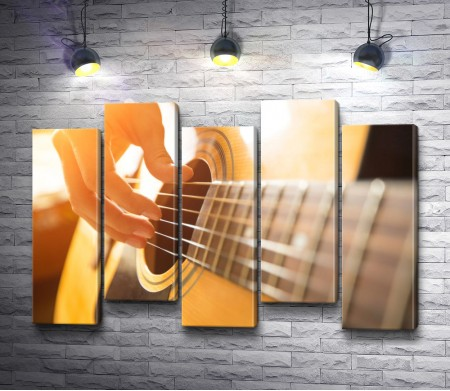

История гитары
Гитара - уникальный инструмент. Он задействован практически во всех стилях музыки. Этот струнный инструмент также имеет множество видов - акустическая, классическая гитара, электрогитара. Её историю можно проследить на протяжении более 4000 лет. Много теорий было выдвинуто о происхождении инструмента. Неоднократно утверждалось, что гитара - это развитие лютни или древнегреческой лиры.
Название гитары происходит от старого персидского "чартар", что в переводе означает четырехструнный. Предки гитары пришли в Европу из Египта и Месопотамии. Эти ранние инструменты чаще всего имели четыре струны.
К началу эпохи Возрождения 4-х струнная гитара стала доминирующей в большинстве стран Европы. Гитара с 5 струнами впервые появилась в Италии примерно в то же время. Как и у лютни, у ранних гитар редко было больше восьми ладов на грифе до корпуса, но в процессе эволюционирования гитары их число сначала увеличилось до 10, а затем до 12 ладов. До шести было увеличено число струн в 17-ом веке. В начале 19-го века можно увидеть, что гитары начинают принимать современную форму. Классическая гитара остается практически неизменной и по сей день. В 20-м веке, в связи с появлением технологии электронного усиления и обработки звука, появился новый тип гитары - электрическая гитара.
16-й век – знаменательный период в развитии гитары. Если до сих пор гитара занимала почетное, но не первостепенное место рядом с виолой, арфой и лютней то теперь она внезапно выдвигается на первый план. Это важное изменение происходит в середине 16-го века. Начав с Испании и Франции, мода на гитару быстро распространяется на Западную Европу. В течении последующих столетий интерес к гитаре то падал, то возрождался во всех европейских странах, кроме Испании, где гитара всегда была на первом плане.
